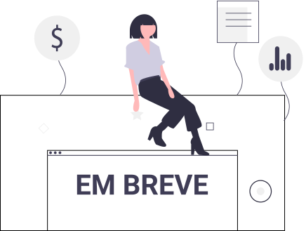

O que é?
A lógica de mercado convencional é voltada para a oferta e ampla divulgação dos produtos e serviços à venda pelo empresário do ramo. Especificamente no mundo do comércio eletrônico, vemos a enorme quantidade de marketplaces, portais na Web e aplicativos para smartphone com gigantescos catálogos de produtos e serviços para todos os gostos e bolsos. Dois exemplos muito bem sucedidos considerando tanto o mercado de produtos novos quanto o de usados aqui no Brasil é a OLX e o Mercado Livre. Este projeto propõe explorar uma inversão nessa lógica de mercado ao propor uma solução onde o consumidor é quem expõe as suas necessidades e aguarda que algum vendedor apareça com a sua proposta.
Como será feito?
Explorando a intenção de compra do consumidor
(i) alimentação direta dos dados tabulados de intenção
(ii) alimentação direta da intenção através do processamento da linguagem natural do texto escrito pelo consumidor
(iii) alimentação direta da intenção a partir do processamento inteligente da imagem da coisa desejada pelo consumidor
(iv) uso de gamificação para estimular o registro de intenção de compra. Nichos prioritários a serem explorados são imóveis e automóveis.
Onde será implantado?
Plataformas de interesse para implantação são Web, Android e iOS, além de interfaces para aplicativos de comunicação instantânea como Whatsapp, Telegram e Signal.
Por que NKW?
NKW é acrônimo para Nobody KnoWs what you want to buy, além de representar as letras imediatamente anteriores à OLX.
